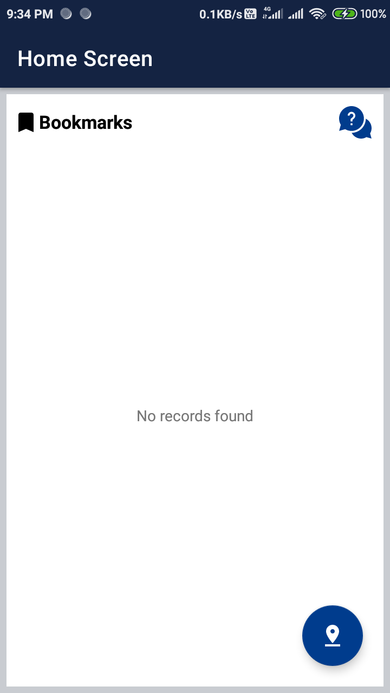
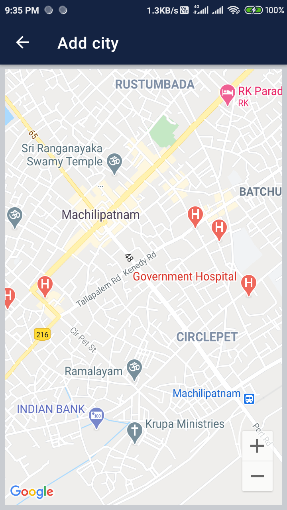
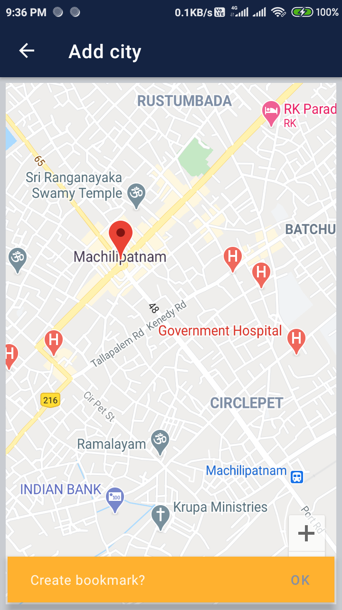
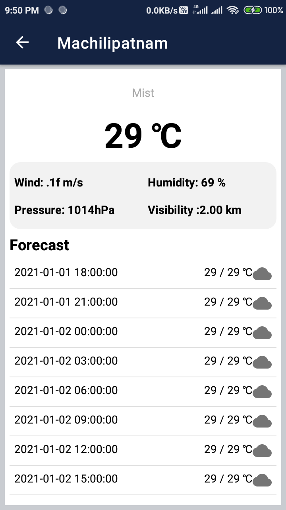

On tap of the add pin button,  the screen will navigate to Maps screen, where user can able to see their location after accepting the permission. 
On tap of the specific location, app will prompt to create a bookmark. After that screen will navigate to home screen which having list of bookmarks saved. On tap of the specific record in the saved bookmarks, screen will navigate to Weather report and forecast of the next coming 5 days. 